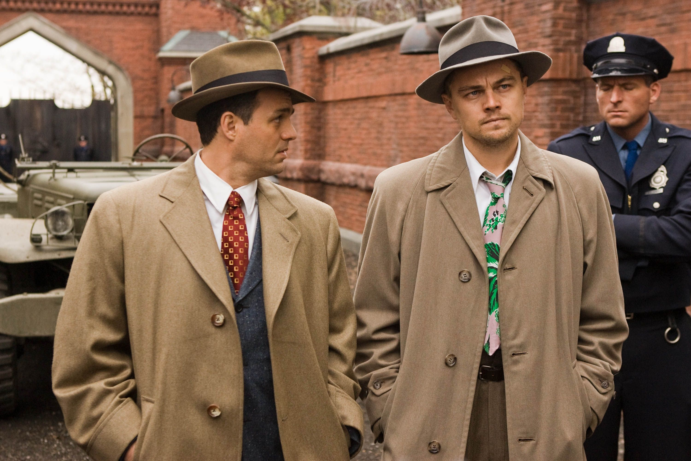

Shutter Island is a 2010 American neo-noir psychological thriller
film[4] directed by Martin Scorsese and adapted by Laeta Kalogridis,
based on the 2003 novel of the same name by Dennis Lehane. Leonardo
DiCaprio stars as Deputy U.S. Marshal Edward "Teddy" Daniels, who is
investigating a psychiatric facility on Shutter Island after one of
the patients goes missing. Mark Ruffalo plays his partner and fellow
deputy marshal, Ben Kingsley plays the facility's lead psychiatrist,
Max von Sydow plays a German doctor, and Michelle Williams plays
Daniels' wife. Released on February 19, 2010, Shutter Island
received generally positive reviews from critics, was chosen by the
National Board of Review as one of the top ten films of 2010, and
grossed $295 million worldwide. The film is noted for its
soundtrack, which prominently used classical music, such as that of
Gustav Mahler, Krzysztof Penderecki, György Ligeti, John Cage,
Ingram Marshall, and Max Richter.

Main Characters
Teddy Daniels
Chuck Aule
Dr. John Cawley
Rachel Solando
Deputy Warden McPherson
Plot Summary
In 1954, U.S. Marshal Edward "Teddy" Daniels and his new partner
Chuck Aule travel to Ashecliffe Hospital for the criminally insane
on Shutter Island, Boston Harbor, to investigate the disappearance
of Rachel Solando, a patient of the hospital who had previously
drowned her three children. The staff, led by psychiatrist Dr. John
Cawley, appear uncooperative. The marshals learn that Dr. Lester
Sheehan, who was treating Solando, had left the island on vacation
immediately after Solando disappeared. Teddy experiences migraine
headaches, flashbacks of his experiences as a U.S. Army soldier
during the liberation of Dachau, and also vivid dreams of his wife
Dolores, who was killed in a fire set by arsonist Andrew Laeddis.
Teddy explains to Chuck that he took the case to find Laeddis,
believing he is on the island. Solando suddenly resurfaces and
believes Teddy is her husband. Teddy later breaks into the
restricted Ward C to find Laeddis where he meets patient George
Noyce who appears to know him well. He tells Teddy that the doctors
are experimenting on patients, some of whom are taken to a
lighthouse to be lobotomized. He warns Teddy that everyone is
deceiving him and tells him not to trust Chuck. Teddy regroups with
Chuck and they climb the cliffs toward the lighthouse but become
separated. Believing he saw Chuck's body on the rocks below, Teddy
climbs down but finds only a cave where a woman claiming to be the
real Solando is hiding. She states that she is a former psychiatrist
who discovered clandestine experiments to develop mind control but
was forcibly committed. She says that Cawley and Dr. Naehring will
use Teddy's war trauma to feign a psychotic break, allowing them to
have him also committed. Teddy returns to the hospital and is
greeted by Cawley. When Teddy asks about Chuck's whereabouts, Cawley
firmly insists that Teddy does not have a partner and that he
arrived on the island alone. Convinced Chuck was taken to the
lighthouse, Teddy heads there but runs into Naehring, who attempts
to sedate him. Teddy overpowers him and breaks into the lighthouse,
only to discover Cawley waiting for him. Teddy confronts Cawley and
reveals his encounter with Solando, saying he believes Cawley is
experimenting on him. Cawley denies that Solando ever existed, and
insists that Teddy has not been drugged, explaining the tremors as
withdrawals from Chlorpromazine, a neuroleptic medication that Teddy
has been taking for two years. Chuck arrives and reveals he is in
fact, Dr. Sheehan. Cawley explains that "Teddy" is Andrew Laeddis, a
U.S. Marshal incarcerated at Ashecliffe for murdering his manic
depressive wife after she drowned their three children. Andrew did
not seek treatment for Dolores when she burned down their apartment
and instead moved his family to a lake house, where Dolores carried
out the killings. Cawley explains that Andrew's delusion is a result
of his guilt, that his migraines and hallucinations are withdrawal
symptoms, and that he had created the alternate persona of Edward
Daniels,[a] also a Marshal, who acted violently and espoused
conspiracy theories about the facility. The "investigation" is an
elaborate role-play to regain his true persona. Overwhelmed by his
sudden recall, Andrew faints. Awakening later, Andrew calmly
recounts the truth, satisfying the doctors that he is lucid. Cawley
notes that they had achieved this state nine months before, but that
Andrew had quickly regressed. He warns that this will be Andrew's
last chance and if he lapses again he will be lobotomized due to his
very violent conduct towards other patients such as Noyce, and
towards the guards. Sometime later, Andrew relaxes on the hospital
grounds with Sheehan. Appearing delusional, Andrew again refers to
Sheehan as "Chuck" and says they must leave the island. Sheehan
signals to Cawley, who orders that Andrew be lobotomized. Andrew
then asks Sheehan if it would be worse "to live as a monster, or to
die as a good man?" A stunned Sheehan calls Andrew "Teddy" but the
latter does not respond and leaves peacefully with the orderlies for
his operation.
Reception and Legacy
Shutter Island received positive reviews for its suspenseful plot,
strong performances, and atmospheric cinematography. The film is
often praised for its psychological depth and intricate narrative.
It has become a notable entry in the psychological thriller genre.
Famous Quotes
Character
Quote
Scene
Teddy
"Which would be worse: to live as a monster, or to die as a good
man?"
Lighthouse scene
Dr. Cawley
"You're smarter than you look, Marshal. That's probably not a
good thing."
Various scenes
Chuck
"You know, this place makes me wonder... Which would be worse:
to live as a monster, or to die as a good man?"
Conversation with Teddy
Rachel Solando
"Is it better to live as a monster or die a good man?"
Various scenes
Warden McPherson
"You're not investigating a disappearance, Teddy. You're a rat
in a maze."
Interrogation scene
Summary
Shutter Island takes the audience on a psychological journey with U.S.
Marshal Teddy Daniels, exploring the thin line between reality and
perception. As the investigation unfolds, the film delves into themes
of mental illness, trauma, and the consequences of the mind's
complexities.